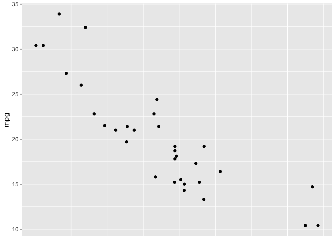
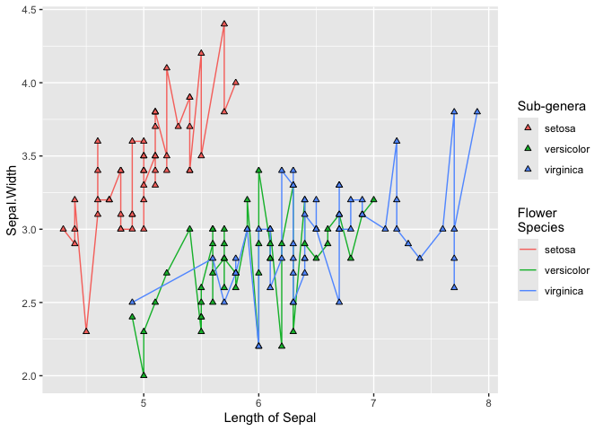

You know how to make ggplot2 graphics, right? No worries. Piece of cake.
Now, can you please rotate the x axis labels to vertical?

ggeasy is here to make that a little easier.
Installation
You can install the latest released version of ggeasy from CRAN with:
install.packages("ggeasy")
or the bleeding-edge development version from GitHub with
# install.packages("remotes") remotes::install_github("jonocarroll/ggeasy")
Reference
See the pkgdown site.
@amrrs a.k.a. @1littlecoder has produced a video walkthrough using ggeasy which covers some of the major features:

Examples
library(ggplot2) library(ggeasy) # rotate x axis labels ggplot(mtcars, aes(hp, mpg)) + geom_point() + easy_rotate_x_labels()

# rotate y axis labels ggplot(mtcars, aes(hp, mpg)) + geom_point() + easy_rotate_y_labels()
# remove 'size' legend ggplot(mtcars, aes(wt, mpg, colour = cyl, size = hp)) + geom_point() + easy_remove_legend(size)

# make the x axis labels larger ggplot(mtcars, aes(mpg, hp)) + geom_point() + easy_x_axis_labels_size(22)

# make all the text red ggplot(mtcars, aes(mpg, hp)) + geom_point(aes(fill = gear)) + easy_all_text_color("red")

# remove just x axis ggplot(mtcars, aes(wt, mpg)) + geom_point() + easy_remove_x_axis()

# remove y axis ticks ggplot(mtcars, aes(wt, mpg)) + geom_point() + easy_remove_y_axis(what = "ticks")

# move legends to bottom ggplot(mtcars, aes(wt, mpg, colour = cyl, size = hp)) + geom_point() + easy_move_legend("bottom")

# move legend to left side ggplot(mtcars, aes(wt, mpg, colour = cyl, size = hp)) + geom_point() + easy_legend_at("left")

# Make legends horizontal ggplot(mtcars, aes(wt, mpg, colour = cyl, size = hp)) + geom_point() + easy_rotate_legend("horizontal")
# use labelled variables iris_labs <- iris labelled::var_label(iris_labs$Species) <- "Flower\nSpecies" labelled::var_label(iris_labs$Sepal.Length) <- "Length of Sepal" iris_labs_2 <- iris_labs labelled::var_label(iris_labs_2$Species) <- "Sub-genera" # use variable labels automatically ggplot(iris_labs, aes(x = Sepal.Length, y = Sepal.Width)) + geom_line(aes(colour = Species)) + geom_point(data = iris_labs_2, aes(fill = Species), shape = 24) + easy_labs()

These functions will try to teach you the ‘official’ way to achieve these goal, usually via the teach argument (where implemented)
ggplot(mtcars, aes(hp, mpg)) + geom_point() + easy_rotate_y_labels(angle = "startatbottom", teach = TRUE) #> easy_rotate_y_labels call can be substituted with: #> theme(axis.text.y = element_text(angle = 90, hjust = 0))

ggplot(mtcars, aes(wt, mpg)) + geom_point() + easy_remove_y_axis(what = "ticks", teach = TRUE) #> easy_remove_y_axis call can be substituted with: #> theme(axis.ticks.y = element_blank())

Credits
Many thanks to Sébastien Rochette (@statnmap) for the design and execution of the hex logo.